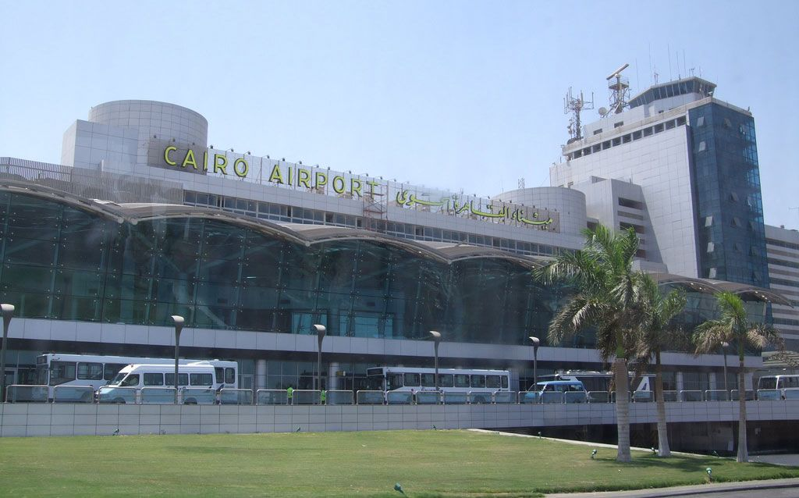
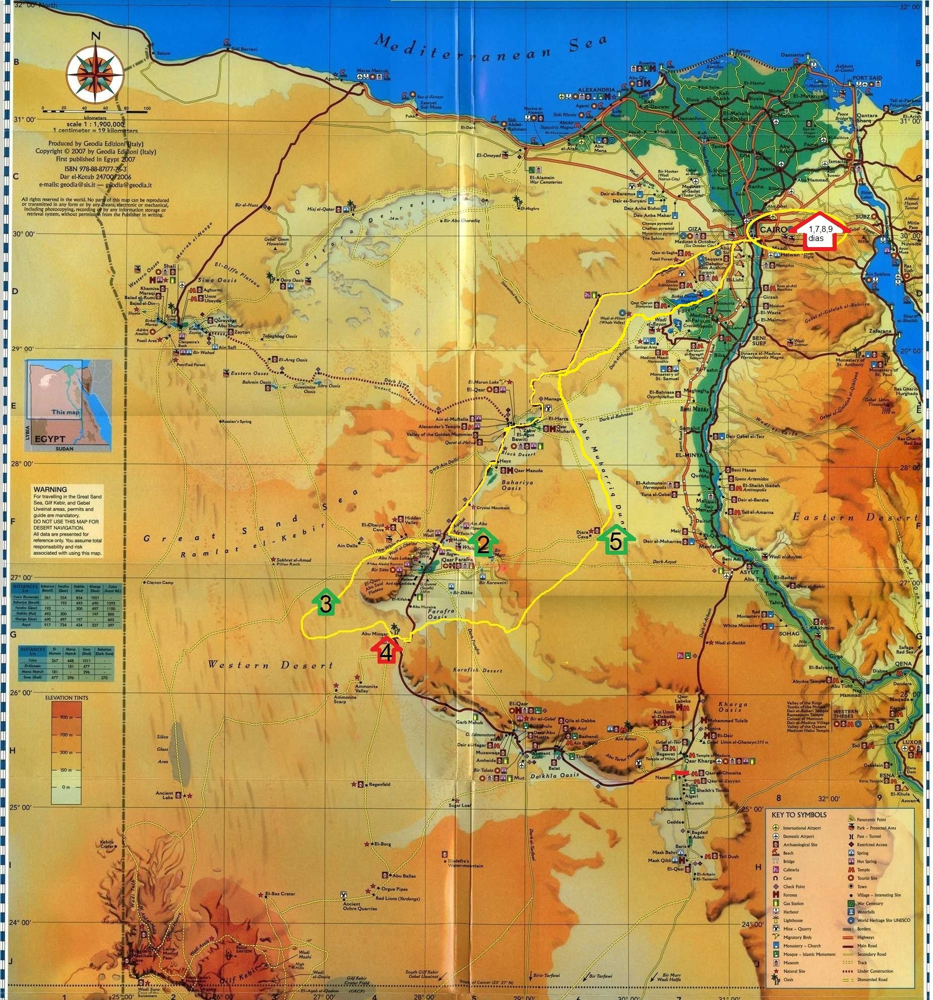
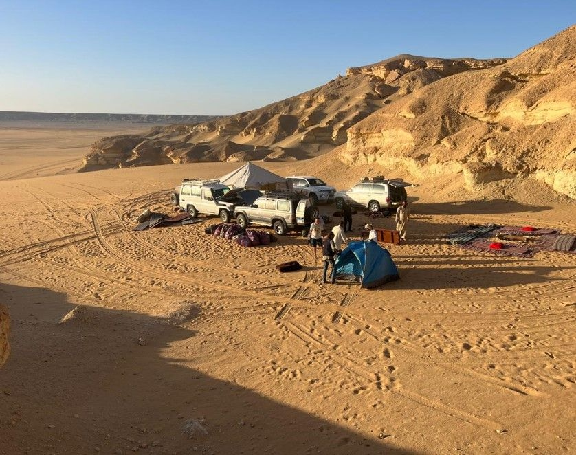
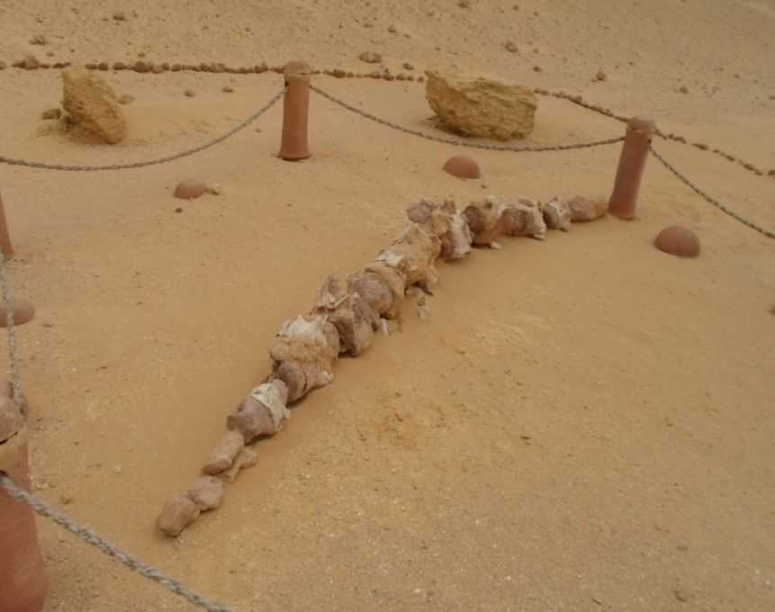
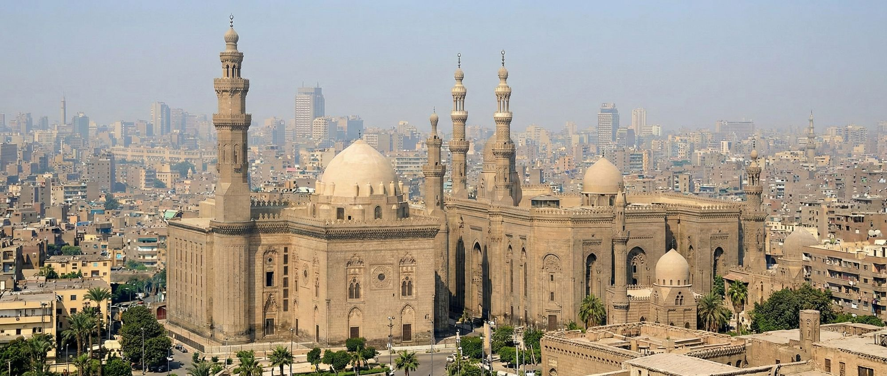

Day 01
Arrival in Cairo
Reception at the airport and transfer to your hotel. Night in Cairo.
CairoHotel

An 11-day desert crossing from Cairo through Bahariya, Farafra and Fayoum, camping under the stars: the White Desert, the Great Sand Sea, Djara Cave, Wadi Hitan and the lakes of Fayoum.
The order of the days can change with the weather, the sand and the group. The essence of the route does not.
Book this route

Reception at the airport and transfer to your hotel. Night in Cairo.

Giza Pyramids and the Saqqara necropolis, the new Grand Egyptian Museum and lunch. Free afternoon and a city walk. Night in Cairo.

Microbus south to Bahariya oasis, lunch and change to 4×4s at El Heiz. Crystal Mountain, then the White Desert through the Agabat pass. Two-person tents.

Sunrise, the Agabat dunes, a bath and tea at Bir Khadra and the rock formations. Lunch on the western side; camp in a valley at the edge of the Great Sand Sea.
Towards the Abu Said massif, lunch on the plateau above Abu Monkar and the night at Sand Gate Camp.

Oasis walk, lunch at Bir Mahmoud I and a bath in the hot spring. Night at Sand Gate Camp.

Drive to the Shaw Shaw mountains, lunch and a visit to Djara Cave. Camp on the Muharriq dunes.

A full day by 4×4 across the Abu Muharriq dunes from south to north. Camp near Darb el-Rayan.

Tracks to the Fayoum road and Wadi Hitan, the Valley of the Whales, with its small museum and fossils. Lunch and on to Wadi Rayan; hotel night in Fayoum.

Morning tour of Wadi Rayan and lunch by the lake, then microbus to your hotel in Cairo.

Breakfast and transfer to Cairo airport.
A clear picture before you ask for a quote. Prices depend on group size and season.
Final services are confirmed in your personalised quote.
What to expect on the ground.
October to April, when days are warm and nights are cool. Ask us about other months.
Travellers in good general health. No technical skills needed — long 4×4 days and simple camps.
Two-person tents, sleeping mats and a camp kitchen. Bring a warm sleeping layer for the night.
GPS and satellite phones on every vehicle; experienced Bedouin drivers and guides.
Sunrise and sunset in the dunes, star fields at night. Bring spare batteries and a dust-proof bag.
Send us your dates and group size and we reply with a personalised quote.
There is no automatic booking: every expedition is prepared for you. Tell us your dates, group size and travel style, and we reply personally with availability and a quote.
Bookings desk open 08:00–20:00 Egypt time. Prefer a form? Go to contact
Continue south instead: the Dabadib valleys, Roman fortresses, the Temple of Hibis and El-Bagawat.